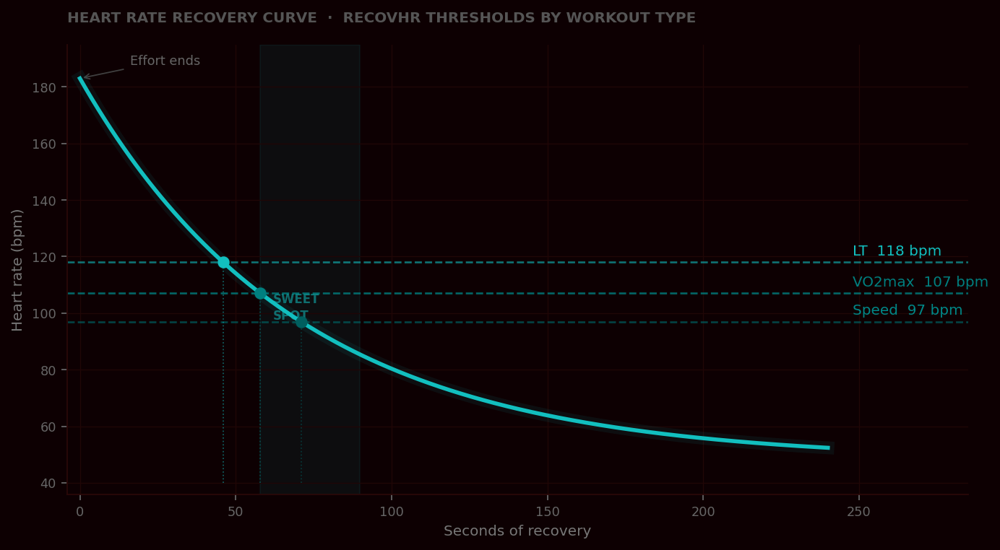
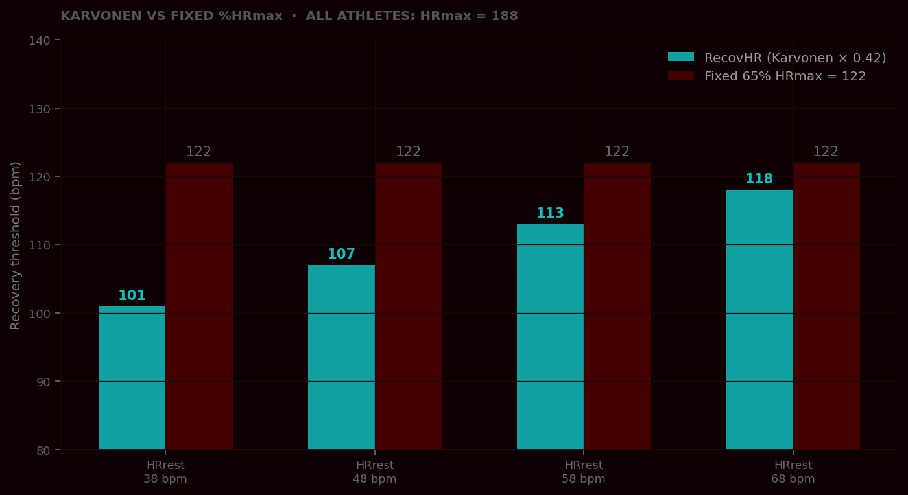
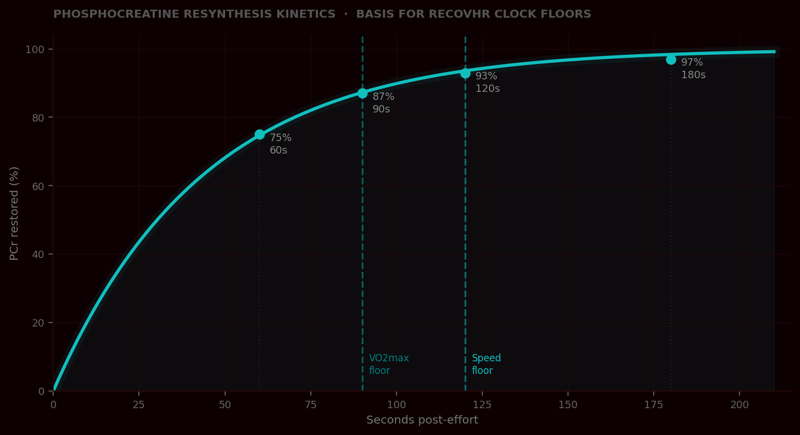
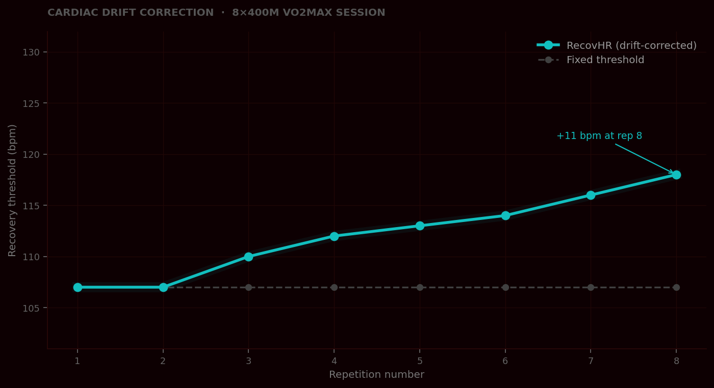

Heart-rate reserve · interval recovery · 2026
Between hard reps, most runners guess. RecovHR converts four biometrics into one number per rep — the heart rate at which you're recovered enough to go hard again.
The problem
Recovery between reps is the least-measured variable in interval training. Getting it wrong in either direction has a cost.
With phosphocreatine only ~50% restored, session quality collapses by the fourth rep. You finish the workout without getting the workout.
Fully reset between reps and you spend 45–75 extra seconds re-ramping to target intensity — diluting the training stimulus you came for.
RecovHR finds the window. One number per rep: the exact heart rate where you're recovered enough to go hard, without losing the stimulus of incomplete rest.
The algorithm
Every threshold scales from heart-rate reserve — your usable cardiac range — so the same session prescribes different numbers for different athletes.
Measured, or estimated by the Tanaka formula: 208 − 0.7 × age.
Morning, seated. Two runners with the same HRmax can differ by 30 bpm here.
30-minute time trial, average HR of the final 20 minutes. Or estimate: 87% of HRmax.
Only needed when HRmax is not directly measured.
Try it
Enter two numbers. Results update as you type.
Measured max. Leave blank to use age.
Morning seated heart rate.
Tanaka estimate: 208 − 0.7 × age.
Drift correction applies from rep 3.
Workout types
Each workout type produces distinct physiological stress, so RecovHR applies a different HRR fraction to each — recovery matched to actual demand.
Incomplete recovery preserves elevated cardiac stress. Matches the 4×4 Norwegian protocol.
400m–1600m repeats · 5K effort
HR didn't peak, so less recovery is needed. Partial rest preserves the lactate signal.
Tempo intervals · cruise intervals
HR lags 30–60s behind a sprint. The clock floor governs; HR is confirmation only.
Strides · hill sprints · 100–200m
Primarily a monitor for the work interval — preventing surges into threshold territory.
Aerobic fartlek · relaxed surges
| Rep | Base | Drift | Start when HR ≤ | Min rest |
|---|---|---|---|---|
| 1 | 107 | — | 107 | 90s |
| 2 | 107 | — | 107 | 90s |
| 3 | 107 | +3.0 | 110 | 90s |
| 4 | 107 | +4.5 | 112 | 90s |
| 5 | 107 | +6.0 | 113 | 90s |
| 6 | 107 | +7.5 | 115 | 90s |
| 7 | 107 | +9.0 | 116 | 90s |
| 8 | 107 | +10.5 | 118 | 90s |
The science

RecovHR targets the zone where HR has dropped enough to go hard again — without losing the training stimulus of incomplete rest.

Two athletes, same HRmax — but resting HR differs by 30 bpm. Karvonen corrects for that. A fixed %HRmax ignores it entirely.

No matter how fast HR drops, the fuel must be physically ready. Clock floors enforce the PCr resynthesis timeline.

A fixed threshold gets harder to meet as the session goes on. RecovHR adjusts each rep to match actual cardiac drift.
Method
Every parameter — HRR fraction, drift constant, clock floor — has a named source. No proprietary data, no black box.
Foundation of all thresholds. Scales targets to individual usable cardiac range.
From the 4×4 Norwegian protocol's 70% HRmax active-recovery bound, converted to HRR.
τ ≈ 43.7s. Basis for clock floors — 87% restored at 90s, 93% at 120s.
Empirical mean from a middle-distance interval study. Applied from rep 3.
208 − 0.7 × age. Lower error than 220 − age across adult populations.
HR peaks 30–60s after a sub-30s rep. The clock floor governs; HR is confirmation.
1.5 bpm/rep comes from one study. Heat can push it to 2–3 bpm/rep.
The 87% × HRmax estimate spans 80–92% in the literature. A field test is preferred.
Not yet tested in a controlled trial against clock-gated recovery.